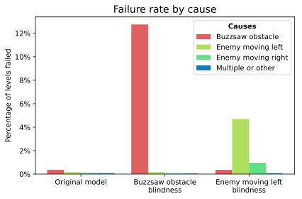
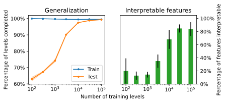
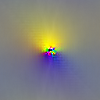
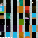
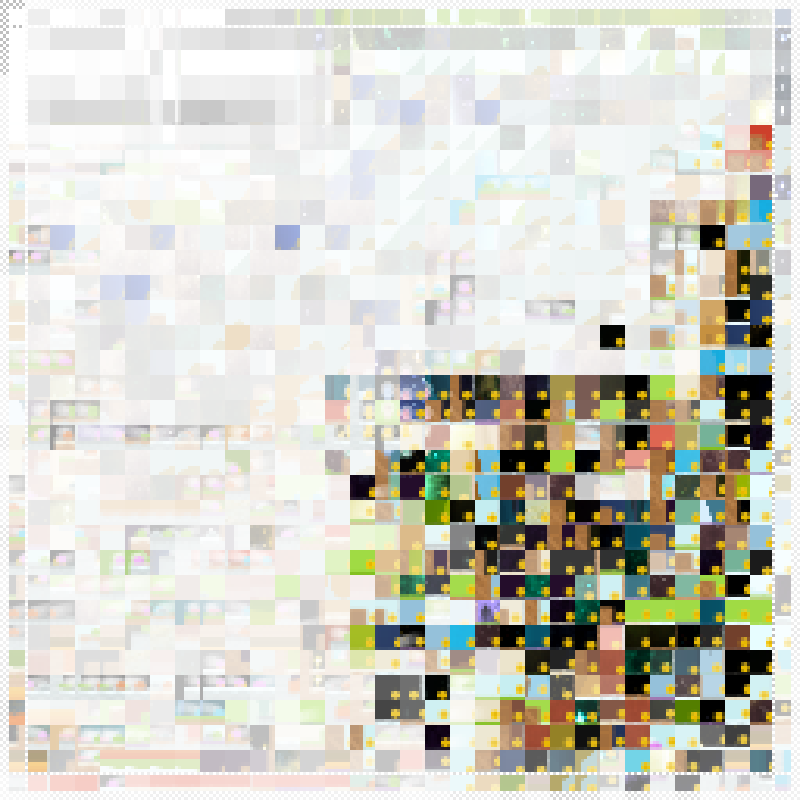

在本文中，我们将可解释性技术应用于一个经过训练能在视频游戏 CoinRun [(Cobbe et al., 2018)] 中玩耍的强化学习（RL）模型。结合归因方法 [(Simonyan et al., 2013; Zeiler et al., 2014; Springenberg et al., 2014; Selvaraju et al., 2017; Fong et al., 2017; Kindermans et al., 2017; Kindermans et al., 2019; Sundararajan et al., 2017)] 与 [(Olah et al., 2018)] 中使用的降维技术，我们构建了一个界面，用于探索模型检测到的对象以及这些对象如何影响其价值函数和策略。我们通过多种方式利用这个界面。
- 剖析失败案例。我们对代理未能获得最大奖励的情况进行逐步分析，从而理解哪里出了问题以及原因。例如，其中一个失败案例是由障碍物暂时被遮挡导致的。
- 幻觉。我们发现模型在观察中“幻觉”出不存在的特征，从而解释了价值函数中的不准确之处。这些幻觉持续时间很短，并未影响代理的行为。
- 模型编辑。我们手动编辑模型的权重，使代理对某些危险“失明”，而不会改变代理的其他行为。我们通过检查哪些危险会导致新代理失败来验证这些编辑的效果。这种编辑只有在之前的分析基础上才可能实现，因此为该分析提供了定量验证。
我们的结果依赖于 CoinRun 中程序生成的关卡，这促使我们提出了可解释性的多样性假设。如果该假设正确，那么随着训练环境变得更加多样化，我们可以预期 RL 模型会变得更易解释。我们通过衡量可解释性与泛化能力之间的关系，为这一假设提供了证据。
最后，我们在 RL 视觉的背景下对几种可解释性技术进行了全面探究，并提出了一些有待进一步研究的问题。
我们的 CoinRun 模型
CoinRun 是一款横向卷轴平台游戏，代理必须躲避敌人和其他陷阱，并在关卡结束时收集金币。
CoinRun 是程序生成的，这意味着代理遇到的每个新关卡都是从零随机生成的。这激励模型学习如何识别游戏中不同类型的对象，因为它无法仅仅通过记住少量特定轨迹来应付 [(Cobbe et al., 2019)]。[1]
以下是一些用于生成 CoinRun 关卡的对象示例，以及墙壁和地板。
CoinRun 中代理有 9 个可用动作：
我们使用 PPO [(Schulman et al., 2017)]（一种 Actor-Critic 算法）在 CoinRun 上训练了一个卷积神经网络，大约训练了 20 亿个时间步。[4] 我们的网络架构在附录 C 中有描述。我们使用了一个非循环网络，以避免同时可视化多个帧的需求。因此我们的模型观察单个下采样的 64x64 图像，并输出一个价值函数（对未来时间折扣奖励总和的估计）和一个策略（动作上的概率分布，下一个动作从中采样）。

由于唯一可用的奖励是收集金币的固定 bonus，价值函数估计的是代理成功完成关卡的时间折扣[5] 概率。
模型分析
在训练出一个强大的 RL 代理后，我们很好奇它学到了什么。遵循 [(Olah et al., 2018)] 的方法，我们开发了一个界面来检查代理玩游戏的轨迹。它整合了来自识别对象的隐藏层的归因，用于突出对特定网络输出有正面或负面影响的对象。通过应用降维，我们获得了归因向量，其分量对应不同类型的对象，我们用不同颜色表示。
以下是我们针对典型轨迹的界面，以价值函数作为网络输出。它揭示了模型如何使用障碍物、金币、敌人等来计算价值函数。
剖析失败
我们完全训练的模型大约每 200 个关卡中会有 1 个未能完成。我们使用界面探索了其中几个失败案例，发现通常能够理解它们发生的原因。
失败往往归结于模型没有记忆，因此必须仅基于当前观察来选择动作。代理策略中动作的不幸采样也常常是部分原因。
以下是一些精选的失败示例，经过仔细的逐步分析。
|
|
The agent moves too far to the right while in mid-air as a result of a buzzsaw obstacle being temporarily hidden from view by a moving enemy. The buzzsaw comes back into view, but too late to avoid a collision.
|
上一个
开始
下一个
结束
幻觉
我们使用广义优势估计（GAE）[(Schulman et al., 2015)][6] 在模型中搜索错误，该方法衡量每个动作相对于代理预期的实际成功程度。异常高或低的 GAE 表明要么发生了意外事件，要么代理的预期被错误校准。因此，过滤这类时间步可以发现价值函数或策略的问题。
使用我们的界面，我们发现了几种模型在观察中“幻觉”出不存在特征的情况，导致价值函数突然上升。
|
|
At one point the value function spiked upwards from 95% to 98% for a single timestep. This was due to a curved yellow-brown shape in the background, which happened to appear next to a wall, being mistaken for a coin.
|
模型编辑
到目前为止，我们的分析主要是定性的。为了定量验证我们的分析，我们手动编辑模型，使代理对我们的界面识别出的某些特征“失明”：一种是锯齿障碍物，另一种是向左移动的敌人。我们的方法可以被视为 线程：电路 编辑 [(Cammarata et al., 2020)] 的原始形式，我们在附录 A 中详细解释了它。
我们通过衡量新代理未能完成的关卡百分比来评估每次编辑，并按导致失败的碰撞对象进行细分。我们的结果表明，这些编辑是成功且有针对性的，对代理的其他能力没有统计上可测量的影响。[7]

然而，我们未能实现完全失明：经过锯齿编辑的模型在锯齿完全不可见时仍然比原始模型表现好得多。[8] 这表明模型除了我们的界面识别的特征外，还有其他检测锯齿的方法。
以下是原始模型和编辑后模型在一些精选关卡上的表现。
多样性假设
上述所有分析都使用了我们网络的同一个隐藏层，即五个卷积层中的第三个，因为在其他层上找到可解释特征要困难得多。有趣的是，该层所操作的抽象级别——找到各种游戏内对象的位置——正是 CoinRun 关卡通过程序生成进行随机化的那个级别。此外，我们发现训练大量随机关卡对于我们能够找到任何可解释特征至关重要。
这使我们怀疑 CoinRun 随机化引入的多样性与可解释特征的形成有关。我们称之为多样性假设：
可解释特征倾向于出现（在给定的抽象级别上），当且仅当训练分布足够多样（在该抽象级别上）。
我们对这一假设的解释如下。对于正向蕴涵（“仅当”），我们只有在特征足够通用时才期望它们可解释，而当训练分布不够多样时，模型没有动机去开发泛化而非过拟合的特征。对于反向蕴涵（“如果”），我们不期望它在严格意义上成立：多样性本身不足以保证可解释特征的发展，因为它们还必须与任务相关。相反，我们对反向蕴涵的意图是假设它在实践中经常成立，这是因为泛化被多样性所瓶颈。
在 CoinRun 中，程序生成被用来激励模型学习能够泛化到未见过关卡的技能 [(Cobbe et al., 2019; Perez-Liebana et al., 2018; Juliani et al., 2019)]。然而，只有每个关卡的布局被随机化，因此我们只能在对象抽象级别找到可解释特征。在更低的级别，游戏中只有少数几种视觉模式，我们模型的低级特征似乎主要由用于挑选这些模式的记忆颜色配置组成。类似地，游戏的高级动态遵循一些简单规则，因此我们模型的高级特征似乎涉及难以破译的对象组合混合。要探索其他卷积层，请参见此界面 here。
可解释性与泛化
为了测试我们的假设，我们通过在一组固定的 100 个关卡上训练代理来降低训练分布的多样性。这极大地降低了我们解释模型特征的能力。这里我们展示了一个新模型的界面，以与上面相同的方式生成。平滑上升的价值函数表明模型已经记住了到关卡结束的时间步数，它用于此的特征聚焦于无关的背景对象。在关卡数量有限的其他视频游戏中也发生了类似的过拟合 [(Song et al., 2019)]。
我们尝试通过改变用于训练代理的关卡数量来量化这一效果，并根据我们的界面识别的 8 个特征的可解释程度进行评估。[9] 特征根据它们聚焦于相同对象的一致性以及价值函数归因是否有意义来评分——例如，背景对象不应相关。这个过程是主观的且有噪声，但这可能是不可避免的。我们还通过在未见过的关卡上测试代理来衡量每个模型的泛化能力 [(Cobbe et al., 2018)]。[10]

我们的结果说明了多样性如何通过泛化导致可解释特征，为多样性假设提供了支持。尽管如此，我们仍然认为该假设高度未经证明。
特征可视化
特征可视化 [(Simonyan et al., 2013; Olah et al., 2017; Erhan et al., 2009; Nguyen et al., 2015; Mordvintsev et al., 2015; Nguyen et al., 2017)] 通过生成示例来回答关于网络某些部分在寻找什么的问题。这可以通过对输入图像应用梯度下降来实现，从随机噪声开始，目标是激活特定神经元或一组神经元。虽然这种方法对于在 ImageNet [(Deng et al., 2009)] 上训练的图像分类器效果很好，但对于我们的 CoinRun 模型，它只产生了无特征的颜色云。只有对于计算输入简单卷积的第一层，该方法才为两个模型产生了可比较的可视化。

基于梯度的特征可视化之前已被证明在 Atari 游戏上训练的 RL 模型中遇到困难 [(Such et al., 2018; Rupprecht et al., 2019)]。为了尝试让它在 CoinRun 上工作，我们以多种方式改变了该方法。我们尝试的任何方法都没有对可视化质量产生明显影响。
- 变换鲁棒性。这是优化步骤之间随机抖动、旋转和缩放图像的方法，以寻找对这些变换鲁棒的示例 [(Olah et al., 2017)]。我们尝试了增加和减小抖动的大小。旋转和缩放对于 CoinRun 来说不太合适，因为观察本身对这些变换不具有不变性。
- 惩罚极端颜色。[12] 注意到我们的可视化倾向于在中间使用极端颜色，我们尝试在可视化目标中包含对第一层激活的不同强度的 L2 惩罚，这成功减小了极端颜色区域的大小，但没有其他帮助。
- 替代目标。我们尝试使用替代优化目标 [(Olah et al., 2017)]，例如漫画目标。[13] 我们还尝试使用下面描述的降维来选择激活空间中非轴对齐的方向进行最大化。
- 低级视觉多样性。为了拓宽模型看到的图像分布，我们在一个具有程序生成精灵的游戏版本上重新训练了它。我们还尝试向图像添加噪声，包括独立的每像素噪声和空间相关的噪声。最后，我们短暂地尝试了对抗训练 [(Madry et al., 2017)]，尽管我们没有深入探究这条路线。
如下面所示，我们能够使用数据集示例来识别出一些挑选出人类可解释特征的通道。因此，基于梯度的方法对我们的努力如此顽固就显得尤为惊人。我们认为这是因为解决 CoinRun 最终不需要太多视觉能力。即使进行了修改，也可能使用简单的视觉捷径来解决游戏，例如挑选某些小的像素配置。这些捷径在模型训练的狭窄图像分布上效果很好，但在基于梯度的优化发生的完整图像空间中行为不可预测。
我们这里的分析为多样性假设提供了进一步的洞见。为了支持该假设，我们有在缺乏多样性时难以解释的特征的例子。但也有证据表明该假设可能需要细化。首先，似乎是低抽象级别的多样性缺乏损害了我们在所有抽象级别解释特征的能力，这可能是因为基于梯度的特征可视化需要通过早期层反向传播。其次，我们增加低级视觉多样性的努力的失败表明，多样性可能需要在任务需求的情境中进行评估。
基于数据集示例的特征可视化
作为基于梯度的特征可视化的替代，我们使用数据集示例。这个想法有着悠久的历史，可以被视为特征可视化的一种 heavily-regularized 形式 [(Olah et al., 2017; Szegedy et al., 2013)]。更详细地说，我们从代理玩游戏的过程中不频繁地采样几千个观察，并将它们通过模型。然后我们对激活通道应用称为非负矩阵分解（NMF）的降维方法 [(Olah et al., 2018)]。[14] 对于得到的每个通道（对应于原始通道的加权组合），我们选择激活最强的观察和空间位置（每个位置限制示例数量以保持多样性），并显示该位置观察的 patch。

与基于梯度的特征可视化不同，这种方法为激活空间中的不同方向找到了一些意义。然而，它可能仍然无法为每个方向提供完整图景，因为它只显示了有限数量的数据集示例，且上下文有限。
空间感知的特征可视化
CoinRun 观察与自然图像的不同之处在于它们的空间不变性要低得多。例如，代理总是出现在中心，代理的速度总是编码在左上角。因此，一些特征在不同空间位置检测到不相关的事物，例如在左上角读取代理的速度，同时在其他地方检测不相关的对象。为了解决这个问题，我们开发了一个空间感知版本的基于数据集示例的特征可视化，其中我们依次固定每个空间位置，并选择在该位置激活最强的观察（对同一观察限制重用次数以保持多样性）。这在可视化和观察之间创建了空间对应关系。
以下是对强烈响应金币的特征的可视化。左上角的白色方块表明该特征在速度信息为白色时也强烈响应，这对应于代理以全速向右移动。

归因
归因 [(Simonyan et al., 2013; Zeiler et al., 2014; Springenberg et al., 2014; Selvaraju et al., 2017; Fong et al., 2017; Kindermans et al., 2017; Kindermans et al., 2019; Sundararajan et al., 2017)] 回答关于神经元之间关系的问题。它最常用于查看网络输入如何影响特定输出——例如在 RL 中 [(Greydanus et al., 2017; Puri et al., 2019)]——但也可以应用于隐藏层的激活 [(Olah et al., 2018)]。虽然我们可以使用许多归因方法，但我们选择了积分梯度方法 [(Sundararajan et al., 2017)]。我们在附录 B 中解释了如何将此方法应用于隐藏层，以及如何将正的价值函数归因视为“好消息”，负的价值函数归因视为“坏消息”。
用于归因的降维
我们上面展示了称为非负矩阵分解（NMF）的降维方法可以应用于激活通道以在激活空间中产生有意义的方向 [(Olah et al., 2018)]。我们发现不应用于激活，而是应用于价值函数归因[15] 甚至更有效（绕过了 NMF 只能应用于非负矩阵的事实[16]）。两种方法都倾向于产生接近 one-hot 的 NMF 方向，因此可以被视为挑选出最相关的通道。然而，当降维到少量维度时，使用归因通常会挑选出更显著的特征，因为归因不仅考虑神经元对什么做出响应，还考虑它们的响应是否重要。
遵循 [(Olah et al., 2018)]，在对归因应用 NMF 后，我们通过为每个得到的通道分配不同颜色来可视化它们。我们将这些可视化叠加在观察上 [(Selvaraju et al., 2017)]，并使用基于数据集示例的特征可视化 [(Olah et al., 2018)] 来为每个通道提供上下文。这给了我们界面的基本版本，使我们能够看到主要特征在不同空间位置的影响。
对于我们界面的完整版本，我们只需对代理玩游戏的整个轨迹重复这一过程。我们还整合了视频控制、压缩观察的时间线视图 [(Ochshorn, 2017)]，以及额外信息，如模型输出和采样的动作。这些共同允许轨迹被轻松探索和理解。
归因讨论
我们 CoinRun 模型的归因具有一些在 ImageNet 模型中不常见的有趣特性。
- 稀疏性。归因往往集中在极少量的空间位置和（后 NMF）通道上。例如，在上面的图中，前 10 个位置-通道对占总绝对归因的 80% 以上。这可能由我们先前的假设解释，即模型通过挑选某些小的像素配置来识别对象。由于这种稀疏性，我们在界面的完整版本中对附近空间位置平滑归因，以便可以用占据的视觉空间量来判断归因强度。这以一些空间精度为代价换取了更高的幅度精度。
- 意外符号。价值函数归因通常具有预期符号：金币为正，敌人为负，等等。然而，有时情况并非如此。例如，在上面的图中，检测锯齿障碍物的红色通道在左侧附近的两个相邻空间位置上同时具有正和负归因。我们最好的猜测是这种现象是统计 collinearity 的结果，由程序关卡生成中的某些相关性以及代理的行为引起。这些可能是视觉上的，如附近像素之间的相关性，或更抽象的，如金币和长墙在每个关卡结束时都出现。作为一个玩具例子，假设当关卡结束变得可见时价值函数应该增加 2%，模型可以为金币增加 1% 并为长墙增加 1%，或者为金币增加 3% 并为长墙减少 1%，效果是相似的。
- 离群帧。当异常事件导致网络输出极端值时，归因可能表现得特别奇怪。例如，在锯齿幻觉帧中，大多数特征同时具有大量正和负归因。我们对此没有很好的解释，但也许特征以比平时更复杂的方式相互作用。此外，在这些情况下，归因往往有很大一部分位于 NMF 方向所跨越的空间之外，我们将其显示为额外的“残差”特征。这可能是因为在计算 NMF 时每个帧被等权，因此离群帧对 NMF 方向的影响很小。
这些考虑表明，在解释归因时可能需要一些谨慎。
有待进一步研究的问题
多样性假设
- 有效性。多样性假设在其他情境中是否成立，包括强化学习内外？
- 与泛化的关系。多样性、可解释特征和泛化之间的三方关系是什么？不可解释特征是否表明模型将在某些方面无法泛化？泛化隐含地指一个底层分布——应该如何选择这个分布？[17]
- 注意事项。可解释特征如何受其他因素影响，如任务或算法的选择，以及这些如何与多样性相互作用？推测性地，足够大的模型是否即使在缺乏多样性的情况下也能通过双下降现象 [(Belkin et al., 2019)] 获得可解释特征？
- 量化。我们能否使用泛化指标定量预测需要多少多样性才能获得可解释特征？我们能否精确定义什么是“可解释特征”和“抽象级别”？
在缺乏多样性时的可解释性
- 非多样特征的普遍性。我们所说的“非多样特征”（即在缺乏多样性时倾向于出现的难以解释的特征）在多样性存在时是否仍然存在？这些非多样特征与被认为能解释对抗样本的“非鲁棒特征” [(Ilyas et al., 2019; Engstrom et al., 2019)] 之间是否存在联系？
- 处理非多样抽象级别。是否存在即使像 ImageNet 这样广泛的分布在某些抽象级别上仍缺乏多样性的情况，以及我们如何在这些抽象级别上最好地解释模型？
- 基于梯度的特征可视化。为什么基于梯度的特征可视化在缺乏多样性时会失效，以及是否可以通过变换鲁棒性、正则化、数据增强、对抗训练或其他技术使其工作？导致极端颜色云的优化属性是什么？
- 数据集示例和归因的可信度。我们能使非常 heavily-regularized 的特征可视化版本（如基于数据集示例的那些）变得多么可靠和可信？[18] 什么解释了归因的奇怪行为，以及它有多可信？
RL 框架中的可解释性
- 非视觉和抽象特征。对于具有非视觉输入的模型，最好的解释方法是什么？即使是视觉模型也可能具有可解释的抽象特征，如对象之间的关系或预期事件：生成示例的任何方法是否足以理解这些，还是我们需要一种全新的方法？对于具有记忆的模型，我们如何解释它们的隐藏状态 [(Jaderberg et al., 2019; Akkaya et al., 2019; Berner et al., 2019)]？
- 提高可靠性。我们如何最好地识别、理解和纠正 RL 模型中的罕见失败和其他错误？我们能否通过模型编辑实际改进模型，而不仅仅是使其退化？
- 修改训练。我们可以通过哪些方式训练 RL 模型使其更易解释而不会显著降低性能，例如通过改变架构或添加辅助预测损失？
- 利用环境。我们如何使用 RL 特有的数据（如代理-环境交互轨迹、状态分布和优势估计）来丰富界面？纳入用户-环境交互（如用于探索反事实）有哪些好处？
我们希望从进一步研究中看到什么以及原因
我们有两个理由致力于研究 RL 的可解释性。
- 能够解释 RL 模型。RL 可以应用于极其多样的任务，并且似乎很可能成为越来越有影响力的 AI 系统的一部分。因此，能够仔细审查 RL 模型并理解它们可能如何失败非常重要。这还可能通过更好地理解不同算法和环境的陷阱来促进 RL 研究。
- 作为可解释性技术的测试平台。RL 模型为可解释性技术带来了一些独特的挑战。特别是，像 CoinRun 这样的环境处于记忆和泛化之间的边界，使它们成为研究多样性假设及相关思想的有用工具。
我们认为大型神经网络目前是最有可能在未来被用于高度有能力和有影响力的 AI 系统的模型类型。与传统上将神经网络视为黑箱的看法相反，我们认为我们有很大机会能够清晰而彻底地理解即使是非常大型网络的行为。因此，我们最兴奋的是根据以下标准得分高的神经网络可解释性研究。
- 可扩展性。研究的结果应该有机会扩展到更难的问题和更大的网络。如果技术本身不可扩展，它们至少应该揭示一些可能相关的洞见。
- 可信度。解释应该忠实于模型。即使它们没有讲述完整的故事，它们至少不应该以某种致命的方式存在偏差（例如使用基于批准的目标导致听起来好但实际上糟糕的解释，或者依赖于严重扭曲信息的另一个模型）。
- 穷尽性。这在大规模下可能被证明是不可能的，但我们应该努力开发能够解释我们模型每一个本质特征的技术。如果穷尽性存在理论限制，我们应该尝试理解这些限制。
- 低成本。我们的技术在计算上不应显著比训练模型更昂贵。我们希望不需要以不同方式训练模型才能使其可解释，但如果需要，我们应该尽量减少计算成本和任何性能成本，以便可解释模型不会在实践中被 disincentivized。
我们提出的问题反映了这一视角。我们强调多样性的原因之一与穷尽性有关。如果“非多样特征”在多样性存在时仍然存在，那么我们当前的技术就不够穷尽，并且可能最终错过更有能力模型的重要特征。开发理解非多样特征的工具可能有助于阐明这是否可能成为一个问题。
我们认为，仅仅以注重细节的态度将现有可解释性技术应用于更多模型，可能会有重大进展。事实上，这就是我们最初处理这个项目的心态。如果多样性假设是正确的，那么随着我们训练模型执行更复杂的任务，这可能会变得更容易。就像早期的生物学家遇到新物种一样，通过用放大镜观察我们面前的生物，我们可能能够获得很多信息。
补充材料
- 代码。用于计算我们模型的特征可视化、归因和降维的工具可以在 lucid.scratch.rl_util 中找到，它是 Lucid 的一个子模块。我们在一个 notebook 中演示了这些。
- 模型权重。我们模型的权重可供下载，以及许多其他模型的权重，包括在不同数量关卡上训练的模型、编辑后的模型，以及在 Procgen Benchmark [(Cobbe et al., 2019)] 的所有 16 个游戏上训练的模型。这些在这里被索引 here。
- 更多界面。我们为我们模型的每个卷积层生成了扩展版本的界面，可以在这里找到 here。我们还为我们的其他每个模型生成了类似的界面，这些在这里被索引 here。
- 界面代码。用于生成我们界面扩展版本的代码可以在这里找到 here。